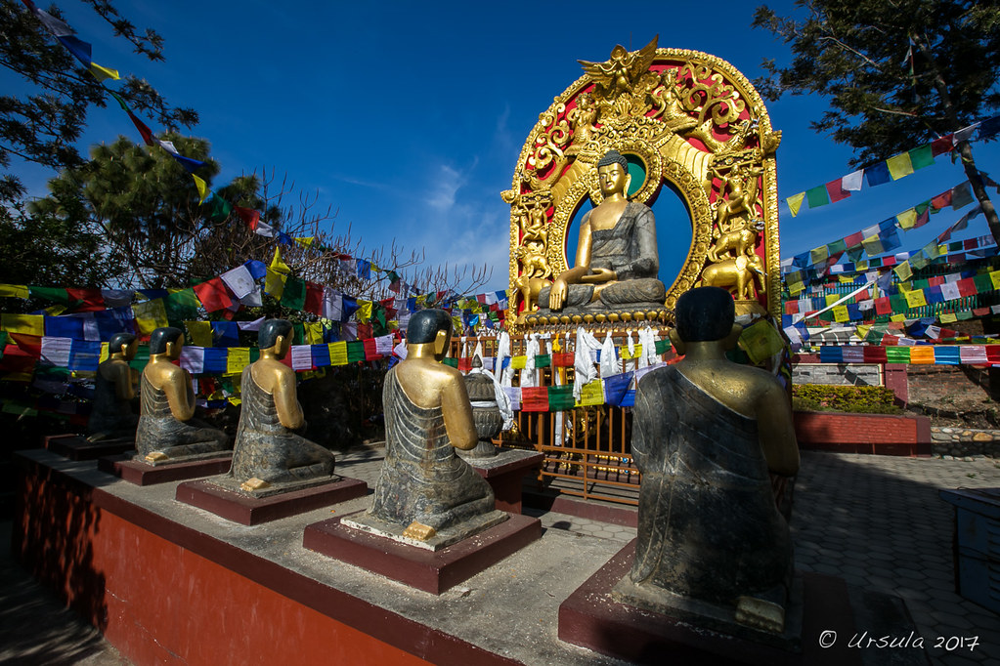
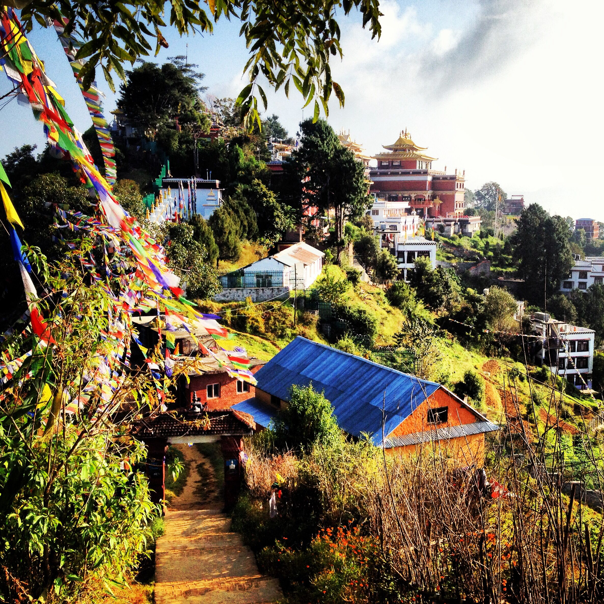
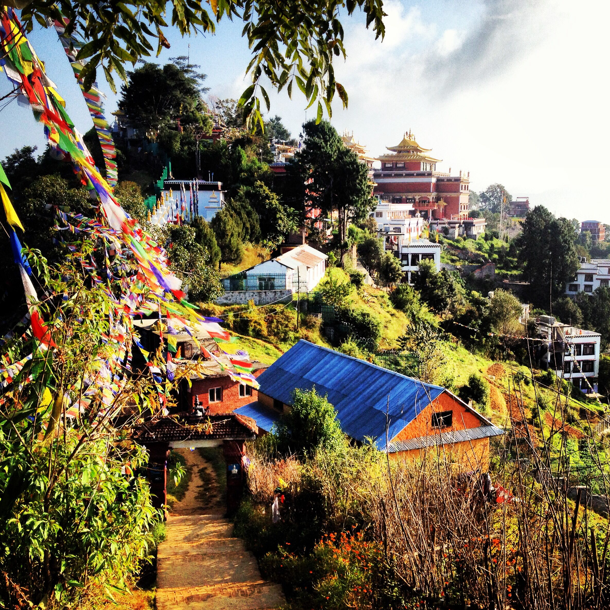

Namobuddha monastry
 Namobuddha Pagoda, located about 40 kilometers southeast of Kathmandu, is a sacred heritage site that holds
immense significance in Buddhist tradition. Situated atop a hill, the pagoda offers stunning views of the
surrounding countryside and is a peaceful retreat for spiritual seekers.
Namobuddha Pagoda, located about 40 kilometers southeast of Kathmandu, is a sacred heritage site that holds
immense significance in Buddhist tradition. Situated atop a hill, the pagoda offers stunning views of the
surrounding countryside and is a peaceful retreat for spiritual seekers.

According to Buddhist legends, it is believed that in one of his previous lives, Lord Buddha sacrificed
himself to feed a hungry tigress and her cubs near this site. As a result, Namobuddha is considered a place
of compassion, selflessness, and enlightenment.
The main attraction of Namobuddha is the beautiful pagoda-style stupa, also known as the Namobuddha Stupa.
The stupa is adorned with colorful prayer flags, and its golden spire shines brightly in the sunlight. It
serves as a focal point for meditation, prayer, and offerings by devotees.
The pilgrimage trail leading to the stupa is lined with prayer wheels and small shrines, creating a serene
and sacred atmosphere. Visitors can join locals in circumambulating the stupa, spinning the prayer wheels,
and chanting mantras, embracing the peaceful and meditative ambience.
Surrounding the pagoda are monasteries and retreat centers where Buddhist monks and nuns reside. These
monastic establishments offer teachings, meditation sessions, and opportunities for spiritual contemplation.
Visitors can engage in meditation practices, participate in spiritual retreats, or simply soak in the
tranquil environment.

 

Visiting Namobuddha provides an opportunity to connect with the teachings of Buddhism, experience moments of
tranquility, and witness the cultural traditions and practices of the local community. The combination of
spiritual significance, natural beauty, and a sense of serenity makes Namobuddha Pagoda a must-visit
destination for those seeking a deeper understanding of Buddhism and a peaceful escape from the bustling
city.